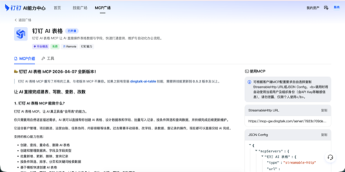
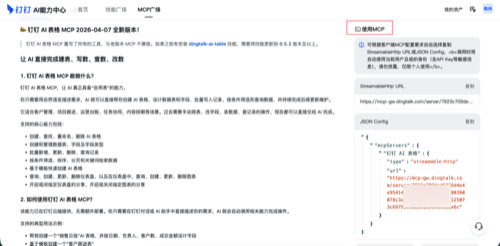
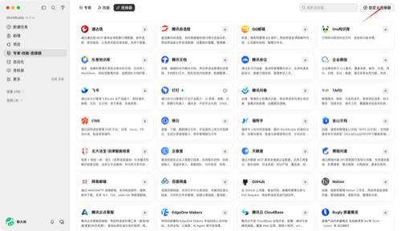
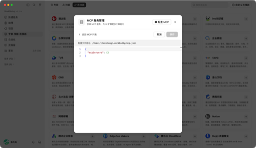
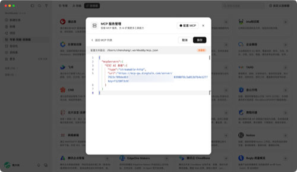
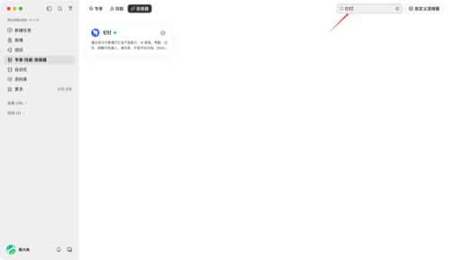
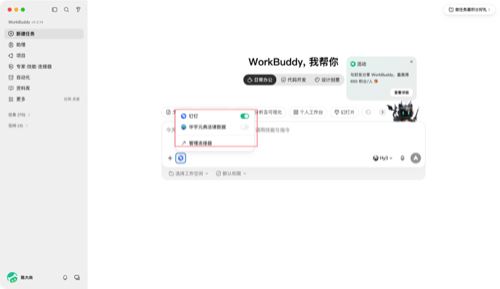

连接钉钉
通过 MCP 协议，让 AI 直接调用钉钉的 AI 表格、文档、考勤、日历、群聊、通讯录、审批等能力。两种方式可选：AI机械臂内置一键安装，或 WorkBuddy 按需配置。
选择你的接入方式
AI机械臂适合希望"开箱即用"的用户；WorkBuddy 适合需要精细控制、按场景按需安装的场景。
方式一：AI机械臂内置
AI机械臂已内置钉钉 CLI，一条命令即可集成 AI 表格、考勤、日历、群聊机器人、文档、审批、日志等全部能力。配置简单，无需手动复制 JSON。
方式二：WorkBuddy 自定义 MCP
在钉钉 AI 能力中心找到你想要的 MCP，复制 JSON，粘贴到 WorkBuddy 自定义连接器。按需安装，节省 Token 消耗，但配置稍繁琐。
AI机械臂内置的钉钉 CLI 通过 dingtalk 命令统一管理全产品能力，覆盖 AI 表格、考勤、日历、群聊与机器人、通讯录、开放平台文档、DING 消息、钉钉文档、钉钉云盘、AI 听记、邮箱、OA 审批、日志、待办等，一条命令全部搞定。
在 AI机械臂界面中找到「工具」或「MCP」管理入口，进入 MCP 服务配置页面。

点击安装后，AI机械臂会自动拉取并配置钉钉 MCP，无需手动复制任何内容。安装完成后即可在对话中使用钉钉各类工具。

安装全套钉钉 MCP 后，每次对话都会携带全部工具定义。如果你的 Token 预算紧张，建议使用方式二（WorkBuddy），按需安装你真正需要的 MCP。
按需安装、手动配置，Token 更省，但需要逐一来配置每个 MCP。适合只需要钉钉部分能力的场景，比如只用 AI 表格。
登录 aihub.dingtalk.com，在 MCP 广场中找到你需要的能力，例如「钉钉 AI 表格」。
进入 MCP 详情页后，点击右上角的「使用 MCP」按钮，会弹出 Streamable HTTP URL 或 JSON Config。点击「复制」获取完整配置。

在 WorkBuddy 左侧导航找到「连接器」，点击右上角的「自定义连接器」按钮。

在 MCP 服务管理弹窗中，将刚才复制的 JSON 内容粘贴到编辑器，确认无误后点击「保存」。

将复制的 JSON 内容粘贴到编辑器中，格式形如：{"mcpServers": {"钉钉 AI 表格": {"type": "streamable-http", "url": "https://..."}}}。确认无误后点击「保存」。

回到 WorkBuddy 主界面，新建任务时勾选刚刚配置的连接器，即可在对话中使用钉钉能力了。

最小权限建议
按需授权，不要把所有权限一次性开放给 AI。
上线前验收清单
不要只测成功路径，失败回退同样重要。
- 读取 AI 表格时，AI 只返回指定范围数据，不泄露全表。
- 写入记录前，AI 会提示预览内容，等待人工确认。
- 发送群消息时，不会 @ 全体成员，内容经过安全过滤。
- Token 过期或权限不足时，返回明确错误提示，而非静默失败。
列出我名下所有"进行中"的审批，按优先级排序，不要修改任何数据。